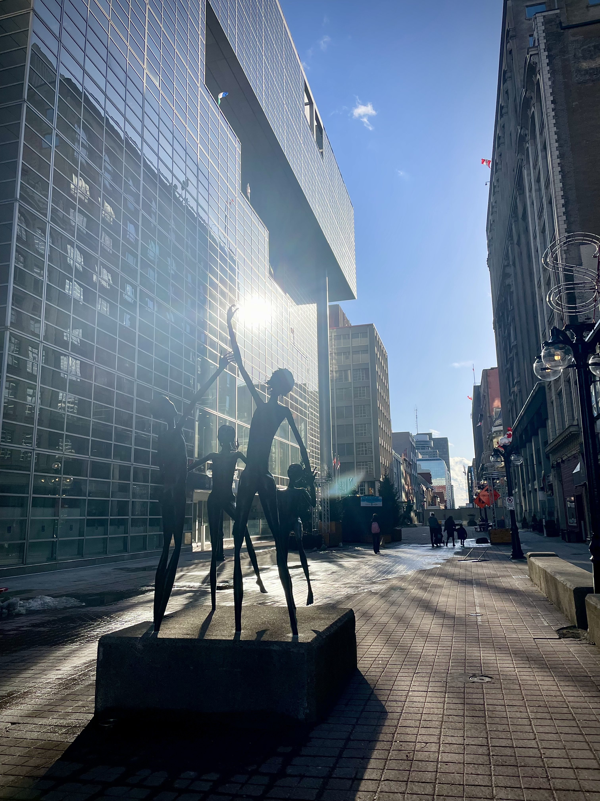
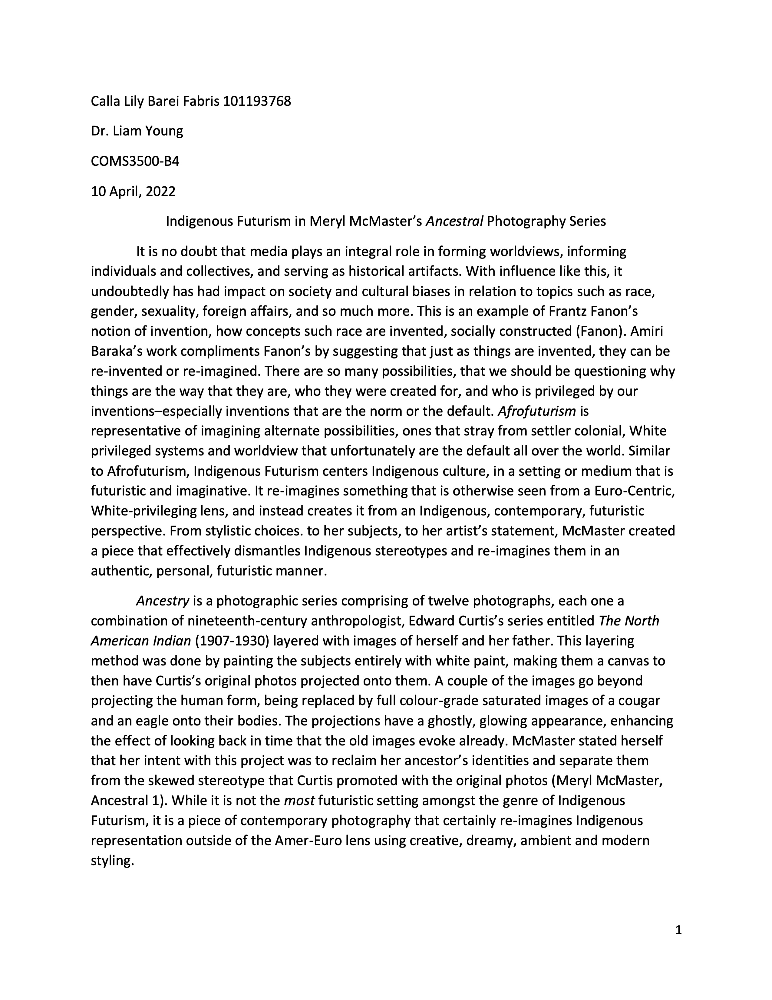

In Season Magazine
An editorial design project exploring seasonal storytelling through photography, typography, and magazine layout.
Explore more of my visual design projects
Welcome to my creative space.
An editorial design project exploring seasonal storytelling through photography, typography, and magazine layout.
Explore more of my visual design projects
An audio documentary exploring the forgotten history of Ottawa's Barrack Hill Cemetery, examining urban expansion, historical erasure, and the ethics of preserving burial sites.
Discover more of my audio storytelling projects

An analysis of Indigenous Futurism though Meryl McMaster's Ancestral photography series.
